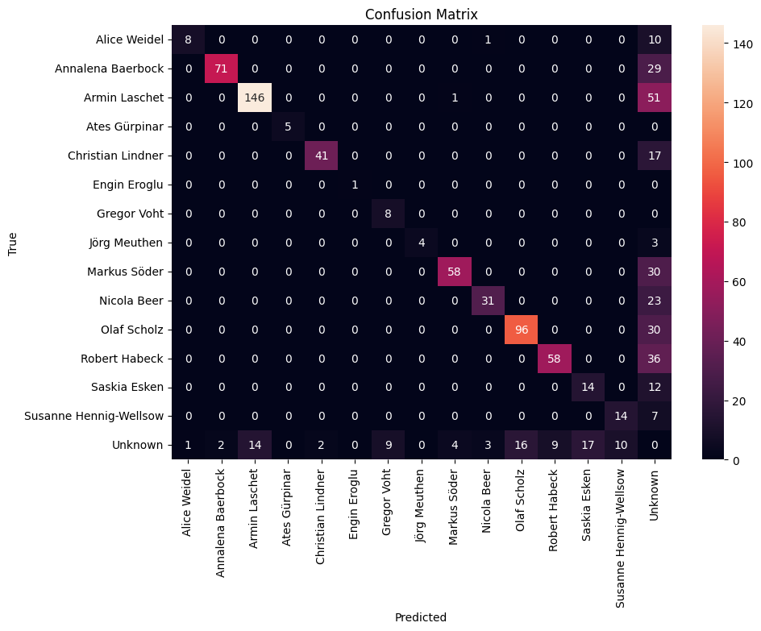

![]()
function drawCodingPlot(coder1, coder2) {
const svgWidth = coder1.length * 10 + 100; // Adjust the width based on the number of items and space for labels
const svgHeight = 50; // Fixed height, two rows
const svg = d3.create("svg")
.attr("width", svgWidth)
.attr("height", svgHeight);
// Adding labels for Coders
svg.append("text")
.attr("x", 40)
.attr("y", 20)
.text("Coder 1")
.attr("font-size", "10px")
.attr("text-anchor", "end");
svg.append("text")
.attr("x", 40)
.attr("y", 40)
.text("Coder 2")
.attr("font-size", "10px")
.attr("text-anchor", "end");
// Drawing circles for codings
coder1.forEach((code, index) => {
svg.append("circle")
.attr("cx", 60 + 10 * index)
.attr("cy", 15)
.attr("r", 4)
.style("fill", code === 1 ? "black" : "none")
.style("stroke", "black");
});
coder2.forEach((code, index) => {
svg.append("circle")
.attr("cx", 60 + 10 * index)
.attr("cy", 35)
.attr("r", 4)
.style("fill", code === 1 ? "black" : "none")
.style("stroke", "black");
});
return svg.node();
}
// Function to generate controlled codings
function generateControlledCoding(nItems, disagreementRate) {
let coder1 = Array.from({length: nItems}, () => Math.random() < 0.5 ? 0 : 1);
let coder2 = [...coder1];
disagreementRate = disagreementRate / 100
let nDisagreements = Math.floor(nItems * disagreementRate);
for (let i = 0; i < nDisagreements; i++) {
let index = Math.floor(Math.random() * nItems);
coder2[index] = 1 - coder2[index];
}
return [coder1, coder2];
}
// Function to calculate Cohen's Kappa
function calculateCohensKappa(coder1, coder2) {
let totalItems = coder1.length;
let agree = 0;
let coder1Yes = 0;
let coder2Yes = 0;
for (let i = 0; i < totalItems; i++) {
if (coder1[i] === coder2[i]) {
agree++;
}
if (coder1[i] === 1) {
coder1Yes++;
}
if (coder2[i] === 1) {
coder2Yes++;
}
}
let Po = agree / totalItems;
let Pe = (coder1Yes / totalItems) * (coder2Yes / totalItems) +
((totalItems - coder1Yes) / totalItems) * ((totalItems - coder2Yes) / totalItems);
return (Po - Pe) / (1 - Pe);
}
viewof disagreement_rate = Inputs.range([0, 100], {step: 1.0, value: 10, label: "Disagreement"})
viewof nItems = Inputs.range([11, 65], {step: 1.0, value: 65.0, label: "n"})
// Main calculation and display
{
const [coder1, coder2] = generateControlledCoding(nItems, disagreement_rate);
const kappa = calculateCohensKappa(coder1, coder2);
// Draw the coding plot
const codingPlot = drawCodingPlot(coder1, coder2);
return html`<div>Cohen's Kappa: ${kappa.toFixed(2)}</div>
<div>${codingPlot}</div>`;
}Agreement & Evaluation
The previous chapter focused on the creation of a Ground Truth dataset using human annotations. In this chapter we pick up on the annotated data and will first assess the quality of the annotations before adopting them as a gold standard. The integrity of the dataset directly influences the validity of our model evaluations. To this end, we take a look at two interrater agreement measures: Cohen’s Kappa and Krippendorff’s Alpha. These metrics are important for quantifying the level of agreement among annotators, thereby ensuring that our dataset is not only reliable but also representative of the diverse perspectives inherent in social media analysis. Once we established the quality of our annotations, we will use them as ground truth to determine how well our computational approach performs when applied to real-world data. The performance of machine learning models is typically assessed using a variety of metrics, each offering a different perspective on the model’s effectiveness. In this chapter, we will take a look at four fundamental metrics: Accuracy, Precision, Recall, and F1 Score.
In the first part of the chapter we will take a look at interrater agreements and machine learning evaluation measures. In the application part I provide the notebooks to:
- Import Label Studio Annotations
- Calculate the interrater measures
- Derive the gold standard from the annotations
- Calculate the evaluation metrics for your model based on the gold standard.
Finally, the optimization part of this page provides an outlook for how to use the evaluation metrics in order to tune your classification prompt.
Interrater Agreement
Cohen’s \(\kappa\)
is a widely used statistic for measuring the agreement between two annotators, taking into account the agreement occurring by chance. This metric is particularly valuable when dealing with categorical data, as is often the case in text annotations. Cohen’s Kappa provides a more robust measure than simple percent agreement calculation because it considers the possibility of the agreement occurring randomly. The kappa score can range from -1 (complete disagreement) to 1 (complete agreement), with 0 indicating the level of agreement that can be expected from random chance.
The definition of \(\kappa\) is:
\(\kappa \equiv \frac{p_o - p_e}{1 - p_e} = 1- \frac{1 - p_o}{1 - p_e}\)
“where \(p_{0}\) is the relative observed agreement among raters, and \(p_{e}\) is the hypothetical probability of chance agreement, using the observed data to calculate the probabilities of each observer randomly seeing each category.” (Source: Wikipedia)
Using python we can easily calculate Cohen’s Kappa:
from sklearn.metrics import cohen_kappa_score
# Example annotations from two annotators
annotator1 = [1, 2, 3, 4, 5]
annotator2 = [2, 2, 3, 4, 4]
kappa = cohen_kappa_score(annotator1, annotator2)
print(f"Cohen's Kappa: {kappa}")Krippendorff’s \(\alpha\)
While Cohen’s Kappa is ideal for pairwise annotation evaluation, Krippendorff’s Alpha is used when there are more than two annotators. This metric is versatile as it can handle various types of data, including nominal, ordinal, interval, or ratio-scaled. Krippendorff’s Alpha assesses the agreement among multiple annotators, accounting for the possibility of chance agreement. Its value also ranges from -1 to 1, with higher values indicating better reliability and 0 representing agreement equivalent to chance.
The definition of \(\alpha\) is:
\(\alpha = 1-\frac{D_o}{D_e}\)
“where \(D_o\) is the disagreement observed and \(D_e\) is the disagreement expected by chance.” (Source: Wikipedia)
In order to calculate Krippendorff’s Alpha using python we need to install the krippendorff package: pip install krippendorff. Calculating the \(\alpha\) value using python is straightforward – as long as the codings are provided as integers.
import krippendorff
import numpy as np
# Example annotations from three annotators
data = np.array([
[1, 2, 3, 4, 5],
[2, 2, 3, 4, 4],
[1, 2, 4, 4, 5]
])
alpha = krippendorff.alpha(data)
print(f"Krippendorff's Alpha: {alpha}")In case of e.g. strings (categorical data), we need to encode the values first:
data_categorical = [
["yes", "no", "yes", "maybe", "no"],
["no", "no", "yes", "maybe", "maybe"],
["yes", "no", "maybe", "maybe", "no"]
]
# Convert categorical data to numerical format
label_encoding = {"yes": 0, "no": 1, "maybe": 2}
data_encoded = np.array([[label_encoding.get(item, np.nan) for item in row] for row in data_categorical])
alpha = krippendorff.alpha(data_encoded)
print(f"Krippendorff's Alpha: {alpha}")Machine Learning Evaluation Metrics
After establishing the reliability of our annotations, we now turn our attention to evaluating the performance of machine learning models using these validated datasets. This is crucial for understanding how well our computational approaches are performing in real-world scenarios. In this segment, we discuss four evaluation metrics: Accuracy, Precision, Recall, and F1 Score.
Warning
This subchapter scratches the surface. Recommended reading: e.g. Haim (2023) pp. 246–252, or machine learning textbooks. Parts of this section have been generated using ChatGPT (e.g. examples).
Understanding Confusion Matrix Components
Before diving into the metrics, it’s important to understand the components of a confusion matrix: True Positives, True Negatives, False Positives, and False Negatives. Here’s a brief explanation of each:
- True Positives (TP): These are cases where the model correctly predicts the positive class.
- True Negatives (TN): These are cases where the model correctly predicts the negative class.
- False Positives (FP): These are cases where the model incorrectly predicts the positive class (also known as a “Type I error”).
- False Negatives (FN): These are cases where the model incorrectly predicts the negative class (also known as a “Type II error”).
The following table summarizes these concepts:
| Actual Positive | Actual Negative | |
|---|---|---|
| Predicted Positive | True Positives (TP) | False Positives (FP) |
| Predicted Negative | False Negatives (FN) | True Negatives (TN) |
Example Scenario:
Consider a social media sentiment analysis model that classifies posts as either “Positive” or “Negative.” In this context:
- A True Positive would be a post that is actually positive and the model also predicts it as positive.
- A True Negative would be a post that is actually negative and the model also predicts it as negative.
- A False Positive would occur if the model incorrectly classifies a negative post as positive.
- A False Negative would occur if the model incorrectly classifies a positive post as negative.
Understanding these components is key to interpreting the subsequent metrics which are derived from the values in the confusion matrix. These metrics – Accuracy, Precision, Recall, and F1 Score – are applicable to both binary (as showcased above) and multi-class classification problems. The concept of True / False Positives / Negatives remains the same, but for multi-class scenarios, they are computed per class and then averaged to provide overall model performance.
Accuracy: A General Overview
Accuracy is the simplest and most straightforward metric. It represents the ratio of correctly predicted observations (both true positives and true negatives) to the total observations in the dataset.
\(\text{Accuracy} = \frac{\text{True Positives (TP)} + \text{True Negatives (TN)}}{\text{Total Observations}}\)
Accuracy can be misleading, particularly in datasets where class distributions are imbalanced. In such cases, a model might appear to perform well simply by favoring the majority class, while failing to accurately predict the minority class.
Precision: Measuring Exactness
Precision reflects the accuracy of positive predictions. It shows how many of the items identified as positive are actually positive. This metric is vital when the costs of false positives are high.
\(\text{Precision} = \frac{\text{True Positives (TP)}}{\text{True Positives (TP)} + \text{False Positives (FP)}}\)
High precision indicates a low rate of false positives, which is essential in scenarios where false alarms are costly or dangerous.
Recall: Assessing Completeness
Recall, or sensitivity, measures the model’s ability to identify all relevant instances. In other words, it shows how many of the actual positive cases were correctly identified by the model.
\(\text{Recall} = \frac{\text{True Positives (TP)}}{\text{True Positives (TP)} + \text{False Negatives (FN)}}\)
High recall is crucial in situations where missing a positive instance has severe implications, like in medical diagnoses.
F1 Score: Harmonizing Precision and Recall
The F1 Score is the harmonic mean of Precision and Recall, offering a balance between the two. It is particularly useful when you need a single metric to reflect a model’s performance, especially in cases of uneven class distribution.
\(\text{F}_{1} = 2 \times \frac{\text{Precision} \times \text{Recall}}{\text{Precision} + \text{Recall}}\)
A high F1 Score suggests a robust model with a good balance between precision and recall.
Warning
While a high F1 Score is often seen as indicative of a model’s effectiveness, it’s important to approach this metric with caution. The F1 Score, being a harmonic mean of precision and recall, may not comprehensively represent the performance nuances in certain contexts, especially in imbalanced datasets where either false positives or false negatives are more consequential. Refer to the criticism section in the Wikipedia article on F1 Score or e.g. the paper “Performance Evaluation in Machine Learning: The Good, the Bad, the Ugly, and the Way Forward” by Flach (2019).
Evaluation Multi-Class Models
When evaluating multi-class classification models, we often need to summarize the performance across all classes. This is where macro, micro, and weighted averages come into play. Each of these averages provides a different perspective on the model’s performance and is useful in various scenarios.
- The macro average is calculated by taking the mean of the metrics, such as precision, recall, or F1 score, computed independently for each class. It treats all classes equally, giving equal weight to the performance on each class regardless of its frequency.
- The micro average aggregates the contributions of all classes to compute the average metric. It calculates the metrics globally by counting the total true positives, false negatives, and false positives.
- The weighted average calculates each metric for each class like the macro average but takes the size of the class into consideration when averaging. Therefore, it accounts for class imbalance by giving more weight to the metrics of larger classes.
Choosing the Right Average:
- Use Macro Averages when you are dealing with imbalanced datasets or when you consider each class equally important.
- Use Weighted Averages when each class’s importance is proportional to its size and you want to weight your metric by class distribution.
- Use Micro Averages if you have a balanced dataset and want an easily understandable metric for overall performance regardless of the class.
Reporting
When presenting the results of a machine learning model’s performance, especially in the context of academic research, the method of reporting is critical. A confusion matrix, such as the one shown below, is a great visualization tool for both, single- and multi-class classification tasks, like in the example below, where I experimented with face recognition on social media images.
The confusion matrix visualizes the model’s predictions in comparison to the true labels, allowing for an immediate grasp of the model’s performance across various classes. It also succinctly illustrates the number of false positives, false negatives, true positives, and true negatives, providing a clear visual summary of the model’s predictive power.

The color intensity in each cell corresponds to the count, with darker cells indicating higher numbers. This visual gradation allows for quick identification of which classes are being predicted accurately and which are not.
However, a confusion matrix is just one of the tools at our disposal for reporting performance metrics. In many cases, supplementing the confusion matrix with additional tables that break down key metrics like accuracy, precision, recall, and F1 score can provide a more nuanced understanding. For example, a table could list each class along with the corresponding precision and recall, giving a clear indication of where the model excels and where it may require further tuning.
| Class/Category | Accuracy | Precision | Recall | F1 Score |
|---|---|---|---|---|
| Alice Weidel | 0.90 | 0.88 | 0.92 | 0.90 |
| Annalena Baerbock | 0.93 | 0.94 | 0.89 | 0.91 |
| Armin Laschet | 0.85 | 0.83 | 0.88 | 0.85 |
| … | … | … | … | … |
| Macro Average | 0.92 | 0.91 | 0.90 | 0.91 |
| Micro Average | 0.92 | 0.92 | 0.92 | 0.92 |
| Weighted Average | 0.93 | 0.92 | 0.93 | 0.93 |
In our projects reports, we will also include such tables and graphs to comprehensively present the model’s performance, ensuring that we communicate the most detailed insights to our readers.
Annotation Export
In this section I will guide you step-by-step through the export of annotations from label studio, the calculation of interrater agreements, the process of deriving the gold standard, and finally the evaluation of your model (prompt).
We are going to use some sample data from one of my projects. The goal was to classify three content variables for social media texts. The content was either from captions, OCR, or transcribed audio. Three annotators were tasked to code each variable.
Exporting the annotations is straightforward: On the dashboard of your project, click “Export”:
Next, choose “Create New Snapshot” (Step 1). When creating the snapshot we may keep the original settings, click “Create Snapshot”. The application takes you back to the previous screen. Now we’re ready to click “Download” (Step 3). Your browser starts downloading a JSON file. Depending on the amount of annotations, it may take a while to open the file.
The JSON file can be quite overwhelming. I’ve used this tool to illustrate as a graph for a better understanding:
The annotations are a list of JSON objects. Each object deals with one item (e.g. one of the texts / images provided for annotation). Each object contains metadata about the annotated items, as well a list of annotation objects (in our case we expect three items).
Each of these annotation objects contains one object for each coding variable, e.g. “Positioning” or “Call to Action” in our example. The actual annotation (in this case for the checkbox interface) is contained in the coding object’s child element value.choices[0].
With this structure in mind, we can start importing our annotations. The intention behind the following notebook is to work with one coding at a time. We want to create one dataframe per coding, with one row per item (=annotated text / image object), and one column per annnotator. Later on we will add another column for our computational classifications.
The Evaluation Notebook
Update (29. Jan. 2024)
The original notebook (below) works well with Label Studio Enterprise, where we have one annotation project handling multiple annotations per item. I created an updated second version of this notebook which handles multiple JSON files. We can use the open source version of Label Studio and create one project per annotator. Once the annotaitons were created, we export the results and use multiple JSON files in the updated notebook. Additionally, this version handles labels, annotations of bounding boxes for images.
Conclusion: Prompt Optimization
This chapter provided an overview of interrater agreement measures and machine learning model evaluation metrics. The last part of the chapter showcases the evaluation notebook, which we can use to import Label Studio annotations and calculate different types of metrics, with the ultimate goal of evaluating our model / prompt against the majority decision, our gold standard or ground truth data. The notebook can also be used throughout the prompting and classification process: Sample a smaller number of items and have each member of your group annotate them. Check the interrater agreement, and in case of reasonable agreement levels use this dataset as your training dataset in an iterative process:
- Filter your dataset to only include items with training annotations.
- Run the classification for all training rows.
- Import the training annotations and training classifications in the evaluation notebook.
- Run the evaluation, check the quality, especially the confusion matrix: Can you spot any problems? Is the F1-Score reasonable?
- Optionally take a qualitative look at mislabellings. Can you spot any patterns? Take another look at prompt design ideas, e.g. use the negative examples in a conversation with ChatGPT and try to improve the prompt.
- Go back to step 2., repeat until the classification quality stagnates.
Warning
The term training data is possibly misleading. When training models using machine learning techinque we use sophisticated approaches to generate a training, a validation set, and a test dataset. The training dataset is used to train the model, the validation set to find the best model, and the test set to estimate the accuracy of your approach. See e.g. this medium article. Using Zero-Shot prompts for classification does not need any training data, when working with Few-Shot prompts we might consider the examples as training data as well.
Why did I chose such a misleading name? Because we need to be careful when evaluating our prompts: When optimizing the prompt following the loop above, we might possibly introduce a bias! Once the prompt has been optimized you should run a final evaluation using a larger test set to make sure that your prompt is not “overfitting”.
This chapter, in combination with the classification chapter, provides a solid foundation for computational analyses. The evaluation concept can also be applied to visual classifications: We can use Label Studio to collect the codings from our participants and evaluate them in the same fashion as shown in the evaluation notebook.
Further Reading
- Resnik and Lin (2010): Evaluation of NLP Systems, in The Handbook of Computational Linguistics and Natural Language Processing.
References
Flach, Peter. 2019. “Performance Evaluation in Machine Learning: The Good, the Bad, the Ugly, and the Way Forward.” Proceedings of the AAAI Conference on Artificial Intelligence 33 (01): 9808–14. https://doi.org/10.1609/aaai.v33i01.33019808.
Haim, Mario. 2023. Computational Communication Science: Eine Einführung. Springer Fachmedien Wiesbaden.
Resnik, Philip, and Jimmy Lin. 2010. “Evaluation of NLP Systems.” In The Handbook of Computational Linguistics and Natural Language Processing, 271–95. Oxford, UK: Wiley-Blackwell. https://doi.org/10.1002/9781444324044.ch11.
Reuse
Citation
BibTeX citation:
@online{achmann-denkler2024,
author = {Achmann-Denkler, Michael},
title = {Agreement \& {Evaluation}},
date = {2024-01-08},
url = {https://social-media-lab.net/evaluation/agreement.html},
doi = {10.5281/zenodo.10039756},
langid = {en}
}
For attribution, please cite this work as:
Achmann-Denkler, Michael. 2024. “Agreement &
Evaluation.” January 8, 2024. https://doi.org/10.5281/zenodo.10039756.